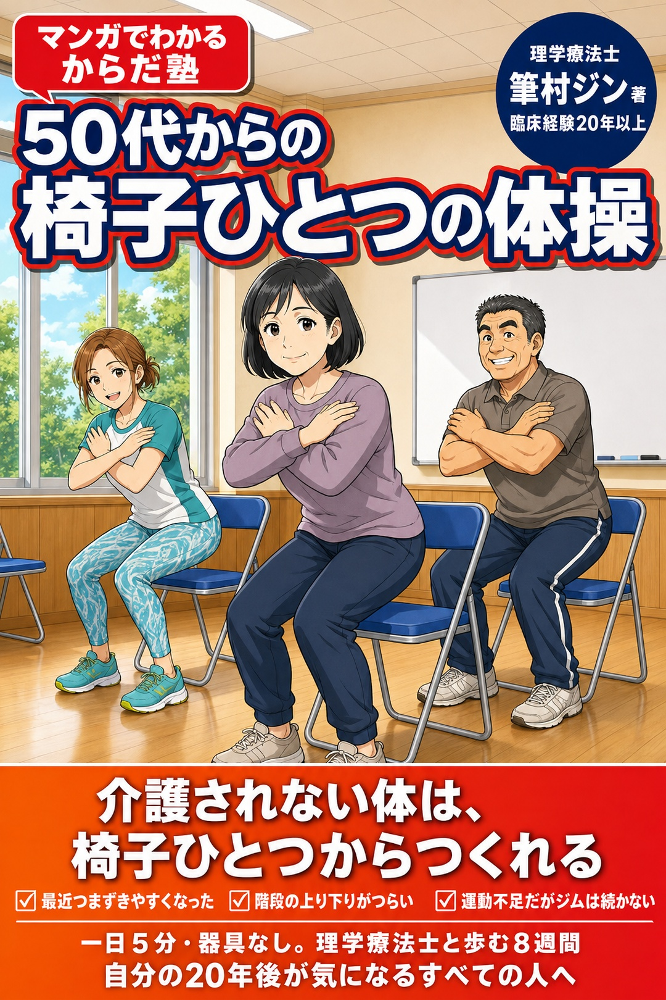
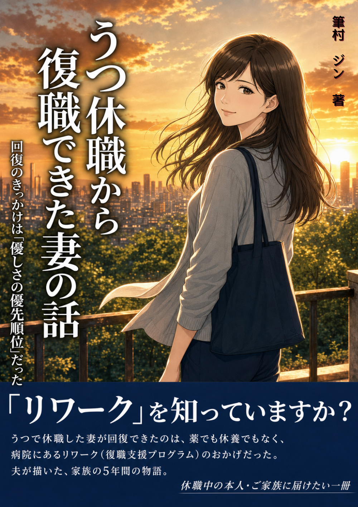

看護師の在宅医療
Webライター副業の始め方
専門知識と経験を、在宅での新しい仕事へつなげる実践ガイド。
Kindleストア 2部門で上位にランクイン！医療・看護の資格・検定2位／ビジネスの意思決定3位
本の紹介を読む
夜勤や不規則勤務と向き合う中で培った専門知識と経験を、Webライター副業へどうつなげるか。自身の実践をもとに解説します。
MANGA & KINDLE BOOKS
理学療法士・Kindle漫画家 筆村ジン
介護、心の回復、働き方、からだのこと。現場の気づきから生まれた、漫画作品と実用書です。
本棚をみる
COLLECTION
気になる一冊を、表紙から手に取ってみてください。
専門知識と経験を、在宅での新しい仕事へつなげる実践ガイド。
Kindleストア 2部門で上位にランクイン！医療・看護の資格・検定2位／ビジネスの意思決定3位
夜勤や不規則勤務と向き合う中で培った専門知識と経験を、Webライター副業へどうつなげるか。自身の実践をもとに解説します。

回復のきっかけと、自分を大切にする考え方を綴った一冊。
休職から復職へ。そばで見守った夫婦の時間を通して、回復のきっかけと自分を大切にするための考え方を届けます。
大切な人の最期の時間に寄り添う物語。
Kindleストア 2部門でベストセラー1位リハビリテーション医学・整形外科学
老健で出会った「最後の時間」を、若きリハビリ職員の目線で描きます。その人らしい暮らしと人生に寄り添う物語です。
記憶が揺らいでも、その人らしさを大切にする物語。
Kindleストア 2部門でベストセラー1位リハビリテーション医学・老年医学
記憶の向こうにある、その人らしさに寄り添う介護とリハビリの現場を描くマンガ作品です。
もう一度、自宅で暮らすための道のりを描く物語。
Kindleストア 老年医学でベストセラー1位老年医学1位・リハビリテーション医学2位
骨折から歩けなくなった芳江が、多職種とともにひとり暮らしの自宅へ帰る道のりを描く医療・介護ヒューマンドラマです。
一日5分、器具なし。椅子ひとつで始めるマンガ＋図解の体操。
Kindleストア リハビリテーション医学でベストセラー1位介護・老年医学・リハビリテーション医学
駅の階段や立ち上がるときの日常の小さな変化に寄り添い、今日から始められる体操をやさしく届けます。

ABOUT THE AUTHOR
MY STORY
理学療法士としての現場の気づきから、Webライター副業、そしてマンガ・Kindle出版へ。
専門知識を分かりやすく届け、誰かの役に立つ資産に変えるまでの歩みです。

「知識は、使ってこそ価値になる。今日もコツコツ、未来の誰かのために。」
この4コマは、たまさん（@tama_ai_2024）↗の「4コマ漫画100本ノック」企画で制作いただきました。